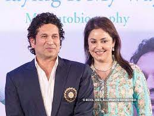

Family

Anjali Tendulkar
Sachin Tendulkar and Anjali Mehta first met each other in 1990 at the Mumbai International Airport when Sachin was returning from his first international cricket tour, and Anjali was there to receive her mother. At that time, Sachin was just 17 years old, while Anjali was 23 and pursuing a degree in medicine. Sachin was carrying his cricket kit, and Anjali initially mistook him for a ballboy.
Arjun Tendulkar
Arjun Sachin Tendulkar (born 24 September 1999) is an Indian cricketer from Mumbai, Maharashtra. He is the son of accomplished former cricketer Sachin Tendulkar and is a left-handed medium-fast bowler and left-handed lower-order batsman. He plays for Goa in domestic cricket, having previously played for Mumbai and its junior teams.

Sara Tendulkar
She is born in 12nd October 1997 in Mumbai, She has done her primary education in Dhirubhai Ambani International School. She is currently taking higher education in London.